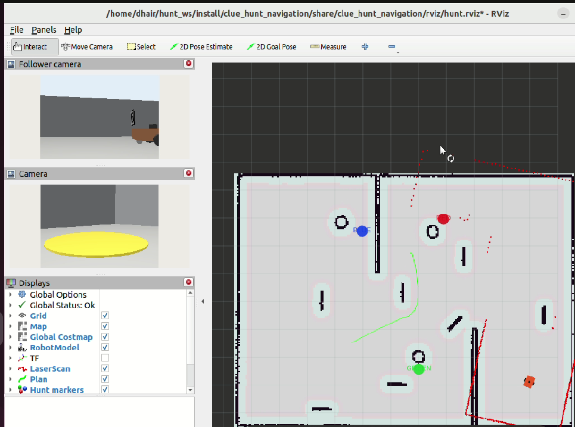
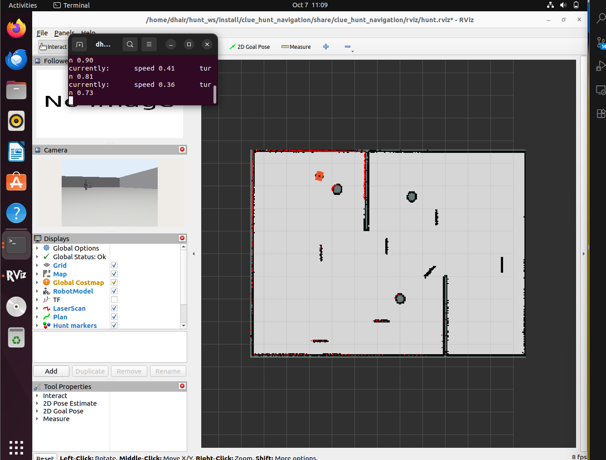
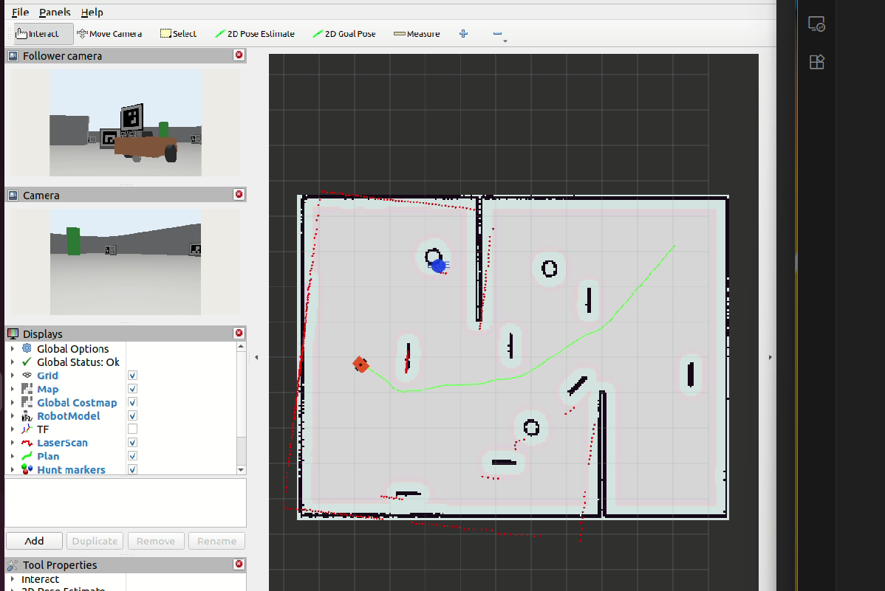
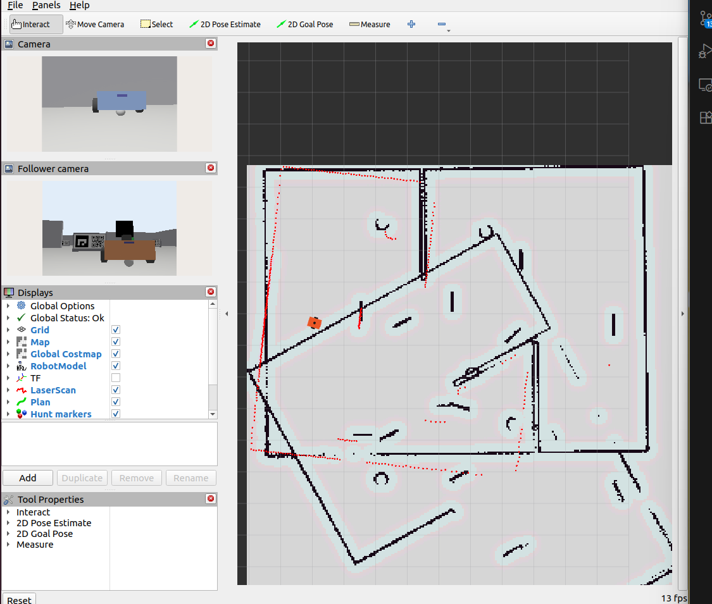
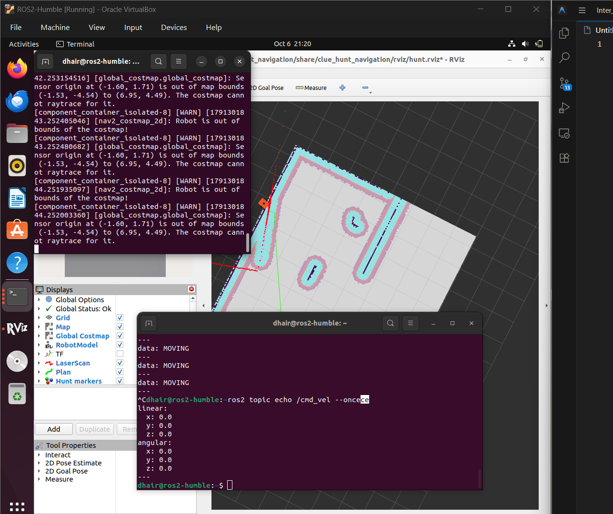

Technical Report and Deliverables Summary
GitHub: Dhairy006 | Date: 8 October 2026
The challenge requires two differential-drive robots to complete a visual treasure hunt autonomously. The leader must map/localize, authenticate a chain of QR and ArUco clues, reject decoys, resolve each clue into a map target, and navigate to the treasure. The follower must trail safely using only its own camera, wheel odometry and namespaced TF.
Each board carries a DICT_4X4_50 ArUco marker and QR payload. The payload gives a board identity, a chained SHA-1 token, and one of four target forms: absolute map coordinate, coloured pillar, interpolation between pillars, or displacement in the board frame. Hidden evaluation worlds may move boards and treasure, swap pillar colours and change lighting, so target positions are not hard-coded and Gazebo ground truth is never read.

| Output | Interface | Implemented behaviour |
|---|---|---|
| Authenticated clues | /hunt/clues - String | Full accepted QR payload, emitted once in chain order. |
| Board locations | /hunt/boards - String | Accepted board ID and estimated map coordinates. |
| Treasure result | /hunt/treasure - PoseStamped | Final calculated map pose, published once after arrival. |
| Follower motion | /follower/cmd_vel - Twist | Camera/odometry-only pursuit with range and loss safeguards. |
| Entry point | hunt.launch.py | Starts both custom nodes and shared parameters. |
| Node | Subscriptions | Publications / actions |
|---|---|---|
hunt_node | /camera/image_raw, CameraInfo, /scan, /map, TF | Required hunt topics, markers, /cmd_vel, Nav2 action goals |
follower_node | Only /follower/camera/*, /follower/odom, follower TF | /follower/cmd_vel, /follower/range, /follower/path |
The leader uses map -> odom -> base_footprint -> cam_optical_link. OpenCV estimates each marker in the optical frame and TF2 converts it to map. The board convention is +X outward from the face, +Z upward and +Y to the reader's right. The follower remains in follower/odom and never consumes leader topics, poses, paths, odometry, status or Gazebo ground truth.
| State | Function and transition |
|---|---|
SEARCHING | Rotate/reposition to acquire the expected board and QR; exploration points are derived from free cells in /map. |
READING | Require repeated matching frames, authenticate chain, then publish clue and board pose. |
LOCATING_PILLARS | Accumulate stable red/green/blue ground-plane estimates. |
WAITING_NAV / MOVING | Wait for Nav2, send goal, monitor result, cancel after a 55 s timeout and recover locally. |
DONE | Publish treasure pose once and stop the leader; follower independently settles by range regulation. |

The supplied simulator/description packages remain read-only. A saved map is produced with SLAM Toolbox; AMCL localizes the leader; Nav2 owns collision-aware motion. autonomy.launch.py combines local simulation, saved-map navigation, RViz and the solver. hunt.launch.py is the evaluator entry point when simulation and Nav2 are already running.
Calibrated BGR frames are searched for DICT_4X4_50 markers. The 0.24 m board marker pose is estimated with solvePnP. ZBar is the primary QR decoder because Ubuntu's packaged OpenCV may lack QUIRC; OpenCV is retained as fallback. A perspective-rectified region next to the marker improves small and oblique QR reads.
A clue is accepted only when the marker ID equals the next expected sequence number, the four-character token matches, the grammar and numeric values are valid, and two consecutive observations agree. These gates reject wrong-ID decoys, same-ID look-alikes and transient false decodes.
| Command | Map target calculation |
|---|---|
GOTO x y | Direct map coordinate; permitted for the starting clue. |
PILLAR C | HSV-segment colour C, cast the bottom-pixel camera ray to the map ground plane, retain a temporal median. |
BETWEEN A B f | A + f(B - A) from independently observed pillar centres. |
REL a b | Transform board-frame homogeneous point [a,b,0,1] by the detected board pose in map. |
TREASURE REL a b | Apply the relative transform, navigate to tolerance, then publish one map-frame pose. |
Red, green and blue masks undergo morphology and contour filtering. A pillar estimate requires at least three consistent samples; observations farther than 0.9 m from the current median are rejected. For boards, an 0.85 m standoff preserves camera visibility.
The leader sends NavigateToPose goals. Goal yaw follows travel direction instead of forcing zero heading. After reaching a clue neighbourhood it rotates, then can visit up to eight map-validated orbit points. If a goal stalls, a 55 s watchdog cancels it and selects another search pose. The occupancy grid supplies safe exploration points rather than hidden coordinates.
The follower detects the leader's rear DICT_4X4_50 marker ID 49 (0.12 m side). Pose estimation gives range and horizontal bearing. Each valid observation is transformed into follower/odom and appended to a spatial trail. Following historical points reduces corner-cutting compared with always driving directly at the current leader pose.
Proportional heading and range errors generate bounded angular and forward velocity. Camera bearing is the fallback if no trail waypoint is available.
Target range is 1.15 m; forward motion stops at 0.75 m, providing 0.15 m margin over the required 0.6 m minimum. Large pose jumps are rejected and prolonged tag loss commands zero velocity.
No leader status is used. If /leader/status is absent, behaviour is unchanged: the follower stops on its own when range regulation is satisfied or the rear tag is lost. This preserves the problem statement's strict sensor-independence rule.

| Component / test | Evidence | Status |
|---|---|---|
hunt_node.py | State machine, TF localization, pillar estimation, Nav2 action goals, required publications. | IMPLEMENTED |
follower_node.py | Marker tracking, follower-odometry trail, safe controller; no leader subscription. | IMPLEMENTED |
| Clue grammar and chain | All practice commands accepted; invalid data and wrong-token board rejected. | PASS |
| Practice textures | Seven supplied textures yield expected ArUco IDs and QR prefixes using ZBar. | PASS |
| Syntax/package assets | Python compilation and package-data checks complete; saved map included. | PASS |
| Integrated autonomy pipeline | Perception, clue state machine, map localization, Nav2 planning/motion, RViz markers and follower tracking exercised in the practice arena. | VERIFIED |
/hunt/markers visualizes accepted boards, pillars and treasure; /follower/path visualizes the follower-only odometry trail. The reproducible baseline uses the submitted saved map, while RViz presents perception, planning and follower diagnostics during execution.
cd ~/hunt_ws source /opt/ros/humble/setup.bash sudo apt install -y python3-pyzbar libzbar0 rosdep install --from-paths src --ignore-src -r -y colcon build --symlink-install --packages-select clue_hunt_solver source install/setup.bash
# Evaluator-managed simulator/Nav2 ros2 launch clue_hunt_solver hunt.launch.py # Local saved-map integration LIBGL_ALWAYS_SOFTWARE=1 ros2 launch \ clue_hunt_solver autonomy.launch.py \ map:=$HOME/hunt_ws/src/clue_hunt_solver/maps/arena.yaml \ gui:=false rviz:=true


/cmd_vel at zero. Fix: complete the arena map and restart localization from the known spawn.| Failure | Cause | Corrective action |
|---|---|---|
| QR visible but payload absent | OpenCV package lacked QUIRC and the code was initially using its decoder. | Use ZBar first; retain OpenCV and perspective rectification as fallbacks. |
| Robot rotated indefinitely near a target | Search had no relocation deadline or Nav2 goal timeout. | Add map-derived search poses, eight local orbit points, a 15 s relocation period and 55 s goal cancellation. |
| Unsafe follower margin risk | Earlier hard stop at 0.62 m was too close to the 0.6 m limit for noisy estimates. | Increase hard stop to 0.75 m and keep target at 1.15 m. |
clue_hunt_solver/ package with source, launch, configuration and tests.maps/arena.yaml and referenced arena.pgm.build/, install/, log/, caches and VM files.The package implements authenticated clue interpretation, map-frame target geometry, Nav2 leader motion, decoy rejection and an independently sensed follower. It directly addresses the required interfaces and includes the saved map, reproducible test assets, RViz diagnostics and documented corrective engineering for observed failure modes.